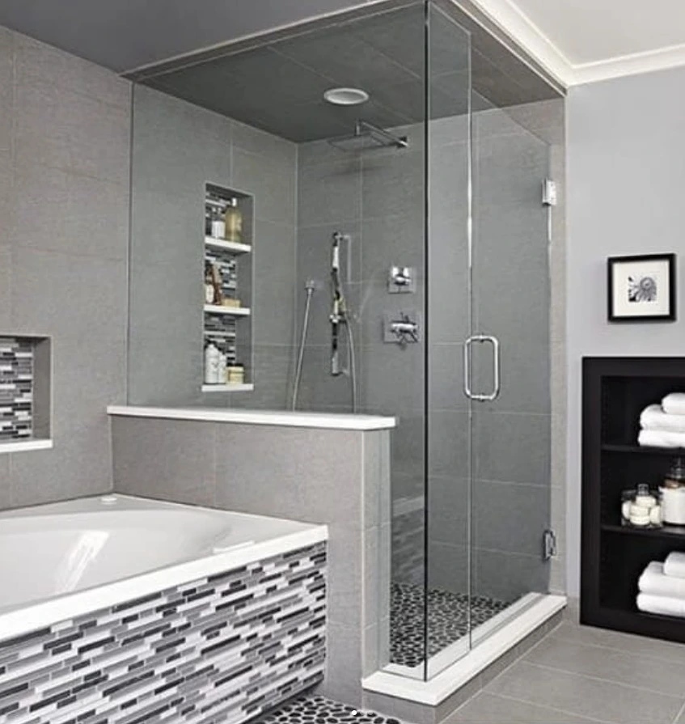
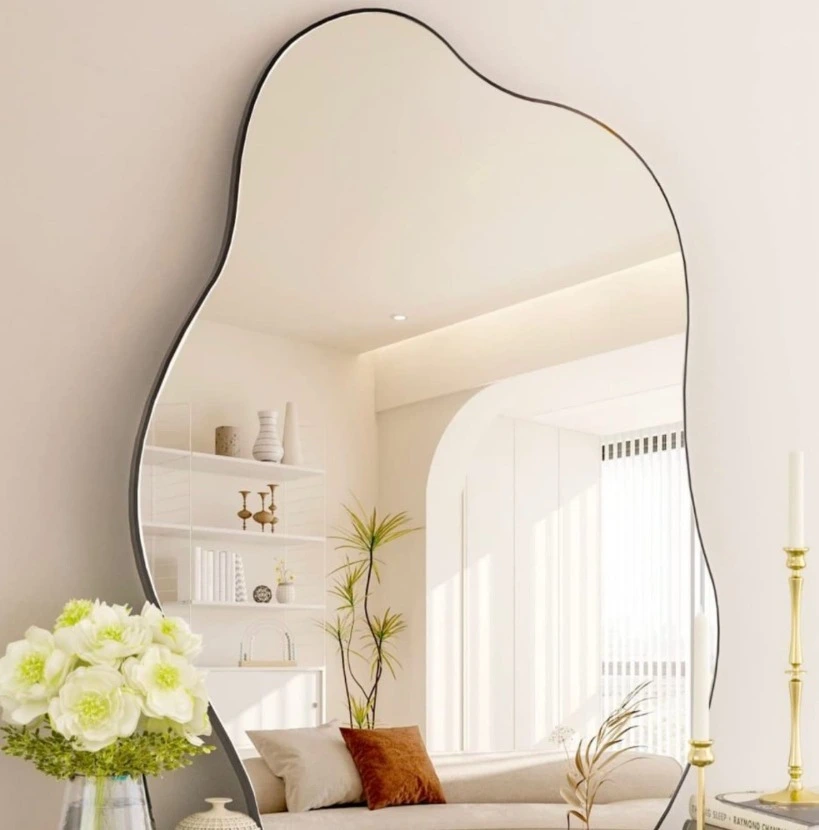
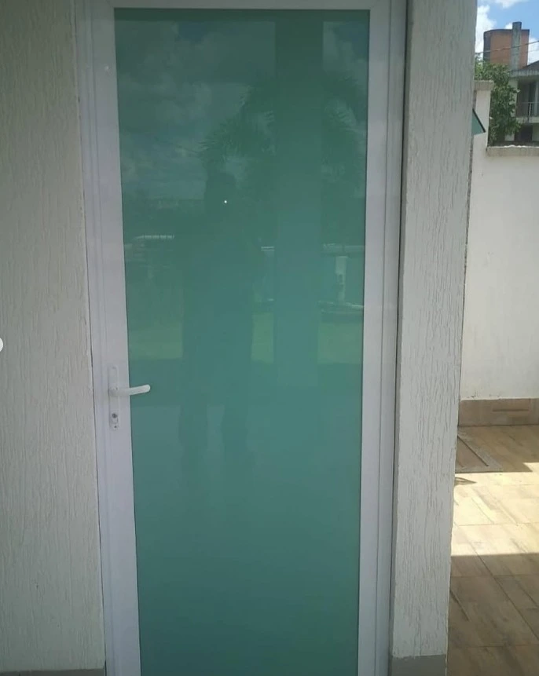
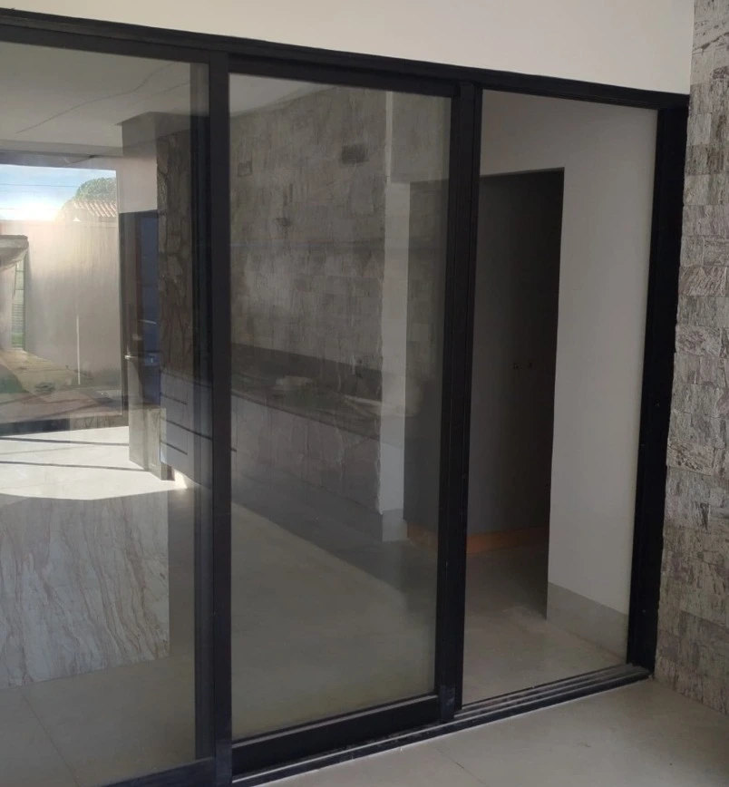
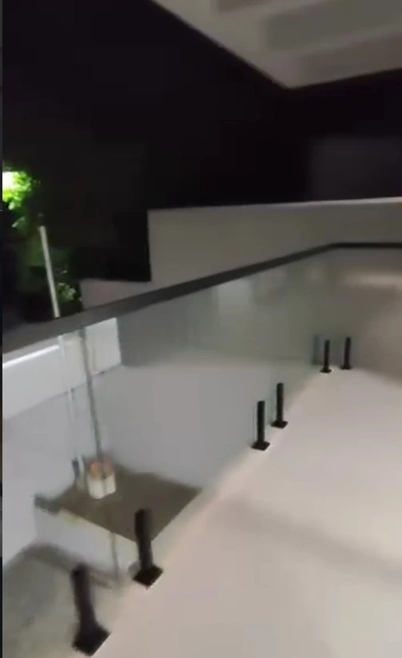
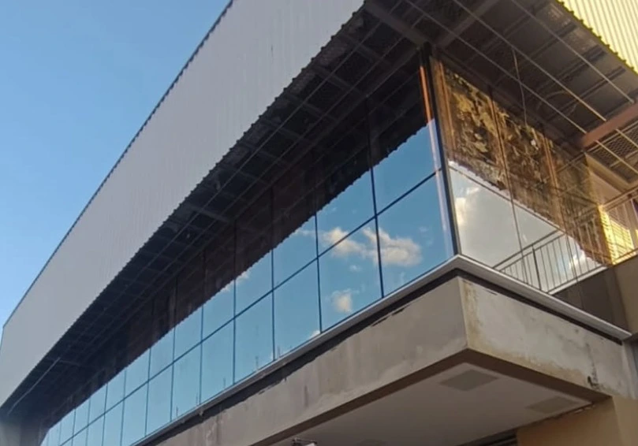

Da medição à instalação: vidros temperados, laminados e especiais para residências e comércios em Goiânia.

Instalação de box de vidro temperado sob medida para banheiros de todos os tamanhos. Trabalhamos com vidro temperado de 8mm e 10mm, modelos de abrir, correr e pivotante, com acabamento em alumínio ou inox.

Espelhos com formatos exclusivos e diferenciados, perfeitos para decoração de ambientes modernos. Cada peça é cortada sob medida, com bordas lapidadas e acabamento premium.

Portas de vidro temperado que combinam segurança, elegância e modernidade. Ideais para escritórios, lojas, clínicas e residências que buscam sofisticação.

Janelas, portas de correr e vitrôs em alumínio com vidro temperado ou laminado. Soluções que oferecem ventilação, iluminação natural e segurança ao seu imóvel.

Segurança com visual sofisticado para sacadas, varandas, escadas e piscinas. Instalamos guarda-corpos de vidro temperado laminado com perfis em alumínio ou inox.

Transforme a frente do seu negócio com uma fachada de vidro impactante. Projetamos e instalamos fachadas em vidro temperado que transmitem modernidade e profissionalismo.
Atendemos também projetos personalizados e especiais. Fale com a gente e descreva sua necessidade!